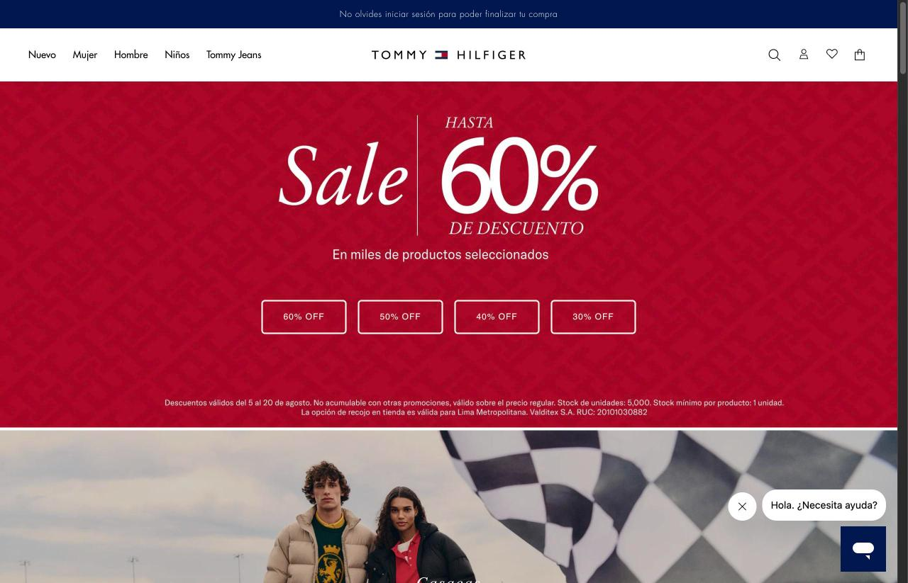
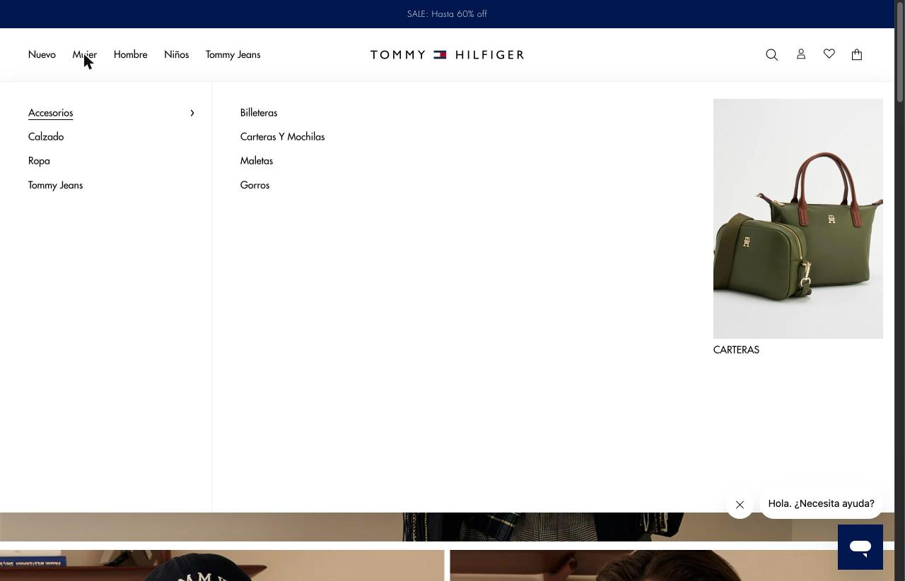
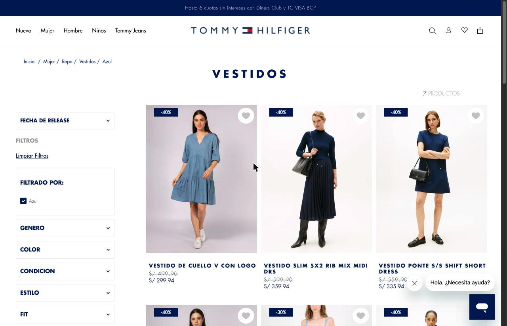
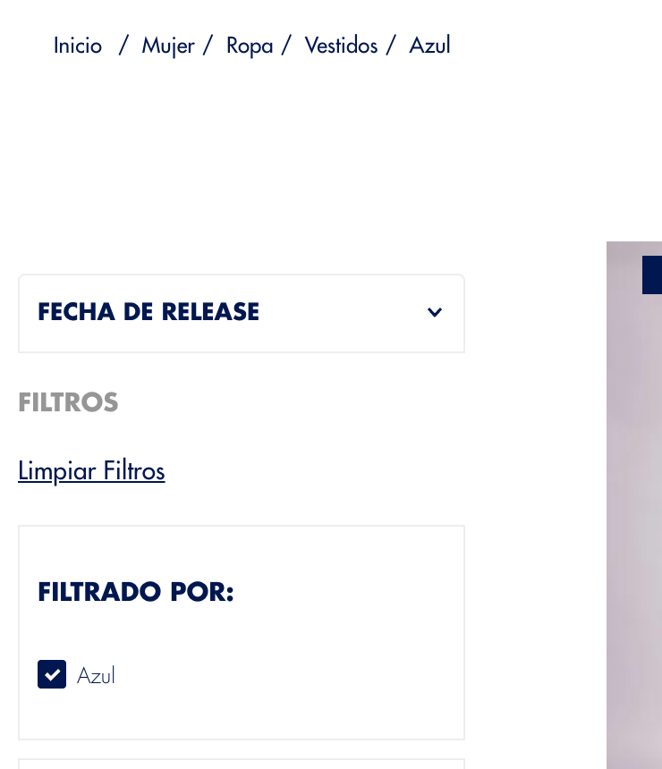
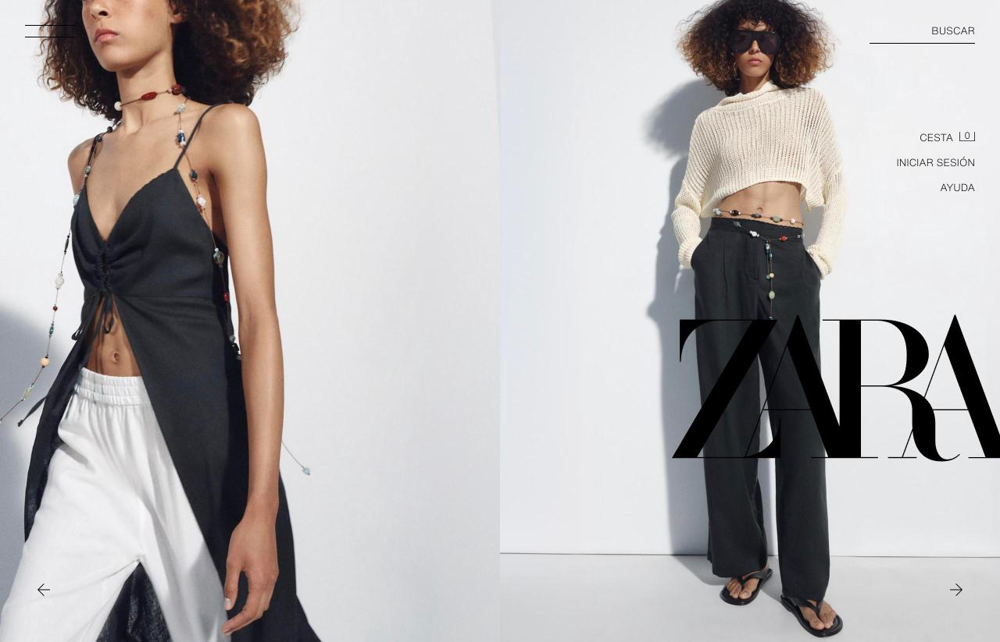
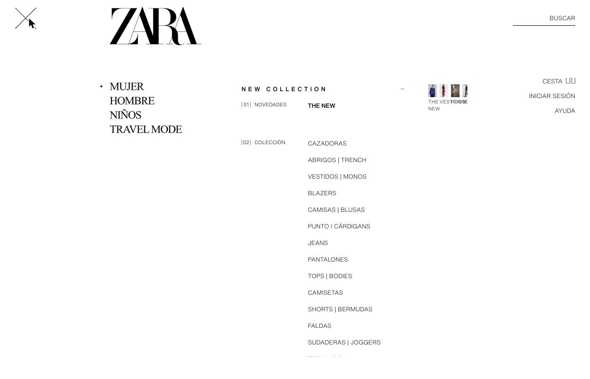
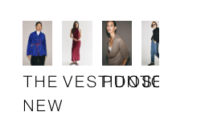
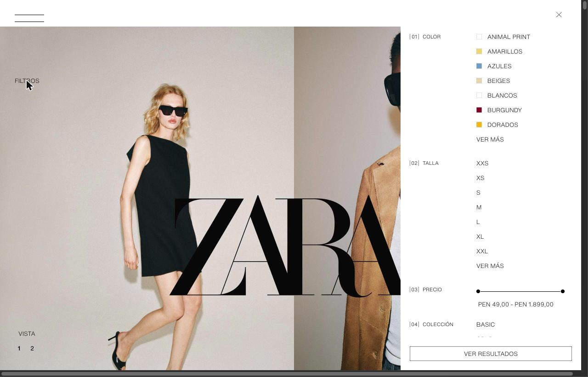
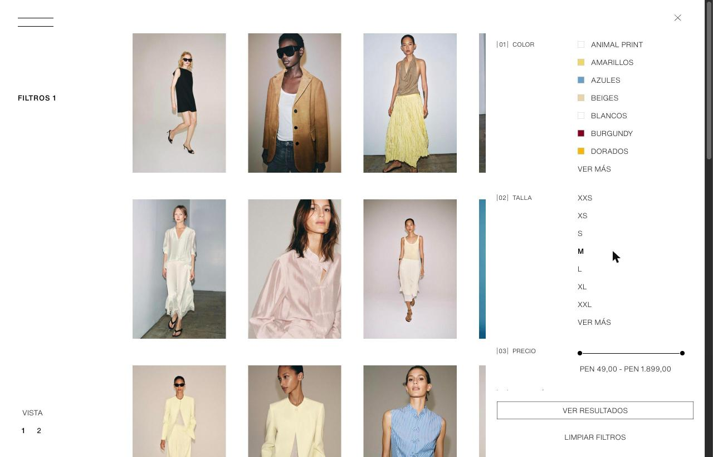
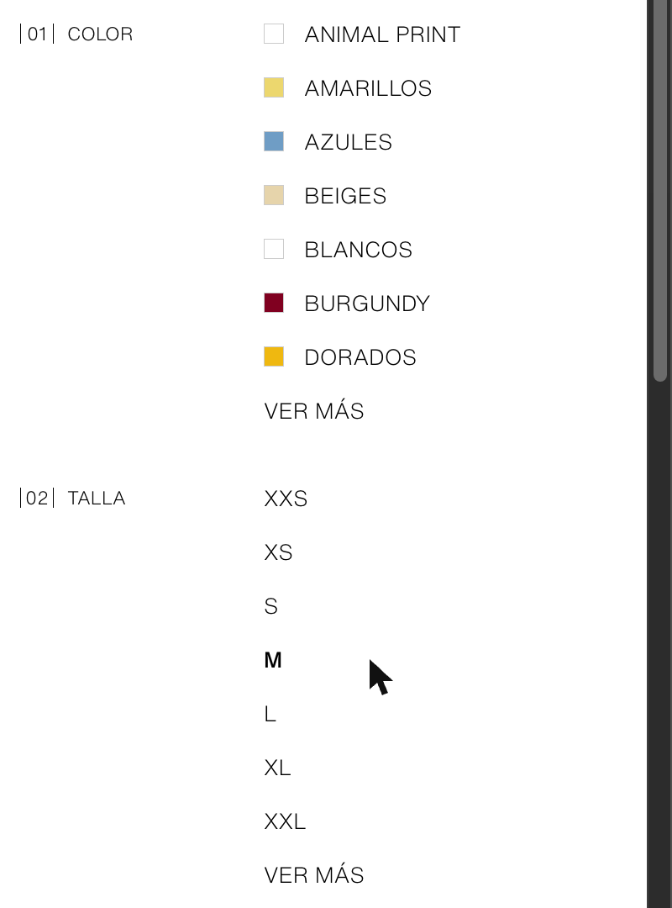

Evaluación heurística del menú de navegación y del filtrado de catálogo en dos tiendas de moda que venden al mismo comprador limeño: Tommy Hilfiger Perú y Zara Perú.
Elegimos el e-commerce de moda porque nos permite comparar dos tiendas que le venden exactamente lo mismo, a la misma persona, en la misma ciudad: una casaca de invierno a alguien en Lima. Cuando el producto y el comprador son idénticos, cualquier diferencia en la dificultad de encontrar la prenda es atribuible al diseño de la interfaz y no al negocio.
No evaluamos la tienda completa. Nos concentramos en una sola tarea, la primera que hace cualquier comprador y la que decide si llega o no al producto: abrir el menú, llegar a una categoría y filtrar el listado por color o talla. En Zara analizamos el menú principal y el listado mujer-nuevo-l1180.html; en Tommy Hilfiger, el mega-menú y el listado /mujer/ropa/vestidos.
Cada afirmación de este informe está respaldada por una medición hecha sobre el sitio en vivo el 19 de agosto de 2026, en Chrome, con una ventana de 1280 × 823 px. Las cifras (áreas de clic, distancias, colores, pesos tipográficos, estados de los controles) se obtuvieron consultando el DOM y los estilos computados de cada elemento, no estimando sobre la captura. Evitamos deliberadamente adjetivos como «intuitivo» o «fácil de usar»: donde hay un juicio, hay un número o una captura que lo sostiene.
| Criterio medido | Zara Perú | Tommy Hilfiger Perú |
|---|---|---|
| Categorías de producto visibles al entrar | 0 de 7 controles en pantalla | 5 rotuladas, siempre visibles |
| Área de clic frente al ancho del texto (menú) | 220 px para 43 px de texto → 5,1× | 52 px para 52 px de texto → 1,0× |
| Separación entre áreas de clic contiguas | 0 px | 6 px |
| Distancia del disparador de filtros al panel | 833 px (65 % del ancho) | 0 px — columna fija, siempre abierta |
| ¿El panel de filtros tapa los resultados? | Sí, se superpone a la grilla | No: filtros 40–290 px, grilla desde 364 px |
| Señales de que un filtro está activo | 1: peso de fuente 300 → 500 | 4: casilla, bloque, ruta y URL |
| Conteo de resultados | No se muestra | «7 PRODUCTOS», se actualiza |
| Ruta de migas (breadcrumb) | Ausente | Inicio / Mujer / Ropa / Vestidos / Azul |
| ¿El filtro queda en la URL? | No: la URL no cambia | Sí: /mujer/ropa/vestidos/azul |
pe.tommy.com es la tienda oficial de Tommy Hilfiger en el Perú, operada por Valditex S.A. Vende ropa, calzado y accesorios de la marca con entrega a domicilio y recojo en tienda en Lima Metropolitana. La funcionalidad que analizamos es la navegación del catálogo: la barra superior permanente, el mega-menú de dos niveles que se despliega al posar el cursor sobre una categoría, y la columna de filtros del listado de productos, donde el comprador acota por género, color, condición, estilo y calce. Concretamente recorrimos la ruta que sigue cualquiera que busca un vestido azul: entrar, abrir «Mujer», llegar a Vestidos y marcar el color.




El comprador nunca tiene que recordar dónde está guardado el catálogo, porque el catálogo está a la vista. En la primera pantalla hay cinco categorías rotuladas con palabras (Nuevo, Mujer, Hombre, Niños, Tommy Jeans) que permanecen fijas en la cabecera durante toda la sesión. Al entrar a un listado aparecen además la ruta Inicio / Mujer / Ropa / Vestidos y el título «VESTIDOS» en un bloque de 480 × 54 px. La columna de filtros vive desplegada de forma permanente en x = 40–290 px: no hay que abrirla ni recordar que existe.
Nielsen formula esta heurística como «minimizar la carga de memoria del usuario haciendo visibles los elementos, las acciones y las opciones». El caso extremo de carga de memoria es una opción que solo existe si el usuario recuerda invocarla. Aquí no ocurre en ningún punto de la tarea: las categorías, la posición actual dentro de la jerarquía y los criterios de filtrado disponibles se reconocen leyendo la pantalla. El único elemento que exige un gesto previo es el segundo nivel del mega-menú, y ese gesto se activa con el cursor sobre una etiqueta ya visible, no sobre un ícono anónimo.
Elementos que se ven iguales se comportan igual, y los que se comportan distinto se ven distinto. Todos los ítems del menú son enlaces que navegan; el que además abre un submenú lo anuncia con un chevron ›, y el activo se subraya. Las áreas de clic siguen una sola regla en los dos niveles: «Mujer» ocupa 34 × 24 px y «Billeteras» 52 × 28 px, en ambos casos ajustadas al texto, con 6 px de separación entre ítems contiguos. En el panel de filtros, los cinco grupos usan el mismo control: una casilla de 16 × 16 px con borde de 2 px.
La heurística exige que el usuario no tenga que preguntarse si palabras, situaciones o acciones distintas significan lo mismo. El sitio respeta además la convención externa —la ley de Jakob— de que una casilla cuadrada con borde es una selección múltiple: el comprador aplica el modelo que ya trae de cualquier otro formulario y acierta. La separación de 6 px entre áreas contiguas cumple una función concreta de precisión: un clic desviado uno o dos píxeles cae en el vacío y no ejecuta la acción del vecino, de modo que el error se convierte en «no pasó nada» en lugar de «pasó lo que no quería».
Al marcar el color «Azul», el sistema informa el cambio por cuatro vías independientes: la casilla se rellena de azul marino rgb(0, 23, 79) y muestra un check; aparece un bloque rotulado «FILTRADO POR:» con el filtro activo listado dentro; la ruta de migas incorpora un cuarto nivel, «Azul»; y la URL pasa a /mujer/ropa/vestidos/azul. En paralelo, el contador de la esquina superior derecha se actualiza a «7 PRODUCTOS».
La heurística pide que el sistema mantenga informado al usuario mediante retroalimentación apropiada y dentro de un tiempo razonable. Aquí la redundancia no es decorativa: cada canal responde a una pregunta distinta. La casilla responde «¿marqué esto?»; el bloque «FILTRADO POR:» responde «¿qué tengo activo en total?»; la ruta responde «¿dónde estoy?»; y el conteo responde «¿sirvió de algo filtrar?». Ese último dato es el que permite decidir si conviene seguir acotando o aflojar un criterio, y es precisamente el que se pierde cuando el sistema no lo publica.
La tienda habla como habla su comprador en Lima. Llama «Casacas y Chalecos» a lo que en el Perú se llama casaca, «Poleras» a lo que aquí es polera y «Chompas» a lo que aquí es chompa. Las direcciones son legibles en el mismo idioma: /mujer/ropa/vestidos, /mujer/calzado/zapatillas. Las condiciones comerciales también son locales y explícitas: cuotas sin intereses con Diners Club y tarjeta VISA del BCP, y recojo en tienda válido para Lima Metropolitana.
Nielsen pide que el sistema hable el lenguaje del usuario, con palabras y conceptos que le resulten familiares, en lugar de términos orientados al sistema. Para un comprador peruano el término «casaca» no es un sinónimo elegante: es la palabra. Que la etiqueta de la categoría coincida con la palabra que la persona ya tiene en la cabeza elimina el paso de traducción entre el vocabulario de la marca y el propio, que es exactamente el trabajo mental que esta heurística busca ahorrar.
Deshacer un filtro es tan barato como aplicarlo, y hay cuatro salidas distintas: desmarcar la casilla, usar el enlace «Limpiar Filtros» que borra todo de una vez, retroceder por la ruta de migas hasta «Vestidos», o pulsar el botón Atrás del navegador. Este último funciona porque el estado filtrado vive en la URL, lo que además permite guardar el resultado en marcadores o pasárselo a otra persona por WhatsApp y que lo abra tal cual.
La heurística exige «salidas de emergencia claramente señalizadas» para abandonar un estado no deseado sin pasar por un diálogo extendido. Reflejar el filtro en la URL convierte cada acción de filtrado en un punto del historial, de modo que el mecanismo de deshacer que el usuario ya conoce —el botón Atrás— pasa a funcionar dentro de la tienda sin que nadie tenga que programarlo como una función aparte. Es la diferencia entre ofrecer un botón «deshacer» y hacer que el sistema sea reversible por construcción.
Tommy Hilfiger no es impecable. Los encabezados de los grupos de filtro aparecen sin tilde («GENERO», «CONDICION»), y el sitio mezcla idiomas en etiquetas que el comprador sí tiene que leer: el control de ordenamiento dice «FECHA DE RELEASE» y hay categorías rotuladas «T-Shirts», «Poleras y Sweatshirts» y «FIT». Son lapsos de la heurística 2, la misma que el sitio cumple bien en el resto del catálogo. No cambian el balance —siguen siendo etiquetas visibles, estables y en el lugar correcto—, pero conviene registrarlos: la evaluación heurística no reparte aprobados, señala defectos donde los encuentra.
zara.com/pe es la tienda en línea de Zara para el Perú, del grupo Inditex. Vende la misma clase de producto al mismo comprador que el caso anterior, lo que hace que la comparación sea limpia: cualquier diferencia de esfuerzo proviene de la interfaz. Analizamos la misma funcionalidad: el menú principal que se despliega desde el ícono de la esquina superior izquierda, y el panel de filtros del listado de productos. La ruta recorrida es la equivalente: entrar, abrir el menú, llegar a una categoría de mujer y filtrar por talla.






El sitio esconde todo lo que el comprador necesita reconocer. En la primera pantalla existen siete controles interactivos —el ícono de menú, Buscar, Cesta, Iniciar sesión, Ayuda y dos flechas del carrusel— y ninguno nombra una categoría de producto. El catálogo entero depende de que la persona recuerde que vive detrás de un ícono de tres líneas sin etiqueta, de 80 × 92 px, sobre una fotografía. El mismo patrón se repite al filtrar: se pulsa «FILTROS» en el borde izquierdo (x = 32 px) y el panel aparece en el borde derecho (x = 892 px), a 833 px de distancia, el 65 % del ancho de la ventana.
La heurística pide hacer visibles los elementos y las opciones para minimizar la carga de memoria. Aquí se hace lo contrario en los dos momentos de la tarea. Con el menú, la estructura del catálogo —la información que permitiría decidir a dónde ir— solo es reconocible después de una acción que hay que recordar. Con el filtro, la separación de 833 px rompe el vínculo entre la causa y el efecto: el control que se pulsó y el panel que apareció no comparten campo visual, de modo que el usuario debe sostener en memoria de trabajo qué pidió mientras su mirada cruza la pantalla, y luego repetir el recorrido en sentido inverso para cerrar. La distancia también tiene un costo motriz medible: por la ley de Fitts, el tiempo de apuntado crece con la distancia al objetivo, y aquí ese trayecto se paga en cada apertura y cierre del panel.
Dentro de una misma lista, elementos idénticos hacen cosas distintas. En la columna de subcategorías de Mujer, CAZADORAS, ABRIGOS | TRENCH y BLAZERS navegan a un listado, pero VESTIDOS | MONOS, colocado entre ellos y con exactamente la misma clase, fuente, tamaño y área de clic, no tiene destino. Lo mismo ocurre un nivel arriba: |01| NOVEDADES solo despliega, mientras |02| COLECCIÓN despliega y además navega, pese a compartir el mismo formato numerado.
La incoherencia también es geométrica. El menú aplica dos reglas opuestas de área de clic: en el primer nivel, «MUJER» ocupa 74 × 25 px, es decir el tamaño exacto de su texto; en el segundo, «JEANS» ocupa 220 × 36 px para 43 px de texto visible, 5,1 veces más ancho de lo que se ve, y las filas se tocan con 0 px de separación. Al barrer la columna verticalmente, el cursor se mantiene en forma de mano durante 200 px continuos sin volver nunca a la flecha, de modo que nada indica dónde termina un botón y empieza el siguiente. Y en el panel de filtros conviven dos lenguajes de control: COLOR usa muestras cuadradas y TALLA no usa ningún control.
Esta heurística existe para que el usuario no tenga que preguntarse si dos cosas que se ven iguales significan lo mismo. Zara obliga a hacerse esa pregunta en cada clic del menú, y la respuesta no está disponible antes de pulsar: la única forma de saber si «VESTIDOS | MONOS» lleva a algún lado es intentarlo. La geometría agrava el asunto en lugar de compensarlo. Un área de clic cinco veces más ancha que su etiqueta, pegada sin margen a la de arriba y a la de abajo, produce un espacio donde el usuario acierta clics que no sabía que podía dar y falla clics que creía estar dando sobre el elemento correcto. Las muestras blancas de «ANIMAL PRINT» y «BLANCOS», por su parte, son cuadrados con borde: la forma universalmente convenida para una casilla de verificación, usada aquí para significar un color.
Cuando el comprador marca la talla M, el sistema modifica una sola propiedad visual: el peso tipográfico pasa de 300 a 500. El color se mantiene en rgb(0, 0, 0), el fondo sigue siendo transparente y no aparece ninguna marca. Existe una casilla real en el documento —verificamos que su estado interno es checked = true— pero está oculta y nunca se dibuja. Además, el listado no informa cuántos productos quedaron, no hay ruta de migas ni título de página visible, y el único recuento —«FILTROS 1»— se imprime a 833 px del panel donde se está trabajando.
La heurística exige retroalimentación apropiada sobre lo que está ocurriendo. Doscientas unidades de peso tipográfico en un texto de 15 px es el margen más estrecho posible para comunicar un cambio de estado, y es el único que existe: si el usuario no estaba mirando esa palabra en el instante del clic, no hay forma de saber si la acción se registró. El problema se agrava porque la diferencia es puramente visual y de grado, no de forma, de modo que se pierde por completo para quien navegue con poco contraste, con zoom alto o con un lector de pantalla apoyado en lo que se dibuja. Y la ausencia del conteo elimina el dato que da sentido a filtrar: sin saber si el resultado son 3 o 300 prendas, el usuario no puede juzgar si le conviene seguir acotando, y el sistema le exige recorrer la grilla para averiguar lo que debería haberle dicho en una línea.
La tienda peruana usa el vocabulario de España. Llama «CAZADORAS» a lo que en Lima se llama casaca, «PUNTO» a las chompas, «CAMISETAS» a los polos y «CESTA» al carrito de compras. Debajo, las direcciones exponen la nomenclatura interna del sistema: la etiqueta «CAZADORAS» apunta a mujer-chaquetas-l1114.html, «ABRIGOS | TRENCH» a mujer-prendas-exterior-l1184.html, y el listado que analizamos vive en mujer-nuevo-l1180.html?v1=2544455. Incluso las flechas del carrusel de portada están rotuladas para lectores de pantalla como «Moverse a PROYECTO» y «Moverse a MAN»: dos nombres de campañas internas, uno de ellos en inglés dentro de una interfaz en español.
Nielsen pide que el sistema use las palabras y los conceptos del usuario en vez de términos orientados al sistema, y que la información aparezca en un orden natural y lógico. Un comprador limeño que busca una casaca no escanea el menú buscando «cazadoras»: busca la palabra que usa, no la encuentra, y termina recorriendo la lista completa o abandonando. La distancia es concreta y comprobable —la competencia rotula esa misma categoría como «Casacas y Chalecos»—, de modo que no se trata de una preferencia estilística sino de una traducción que el sitio le delega al cliente. Las etiquetas «PROYECTO» y «MAN» son el caso puro que la heurística nombra: vocabulario del equipo que construyó el sistema, publicado tal cual a quien no tiene por qué conocerlo.
El estado del filtro no queda registrado en ningún lugar recuperable. Tras marcar la talla M, la dirección del navegador sigue siendo exactamente la misma: mujer-nuevo-l1180.html?v1=2544455. El resultado filtrado no se puede guardar en marcadores, no se puede compartir y no queda como un paso del historial, de modo que el botón Atrás no devuelve al listado sin filtrar sino que saca a la persona de la página. A esto se suma que el panel se abre desde el borde izquierdo y se cierra desde el derecho: la aspa está en x = 1205 px, a 1146 px del control que lo abrió.
La heurística pide salidas de emergencia claramente señalizadas para abandonar un estado no deseado. Aquí el usuario queda atrapado de dos maneras. La primera es de reversibilidad: el mecanismo de deshacer que toda persona ya conoce —el botón Atrás— no funciona sobre la acción que acaba de realizar, porque el sistema no registró esa acción como un estado. La segunda es de compartición: dos amigas no pueden mirar el mismo listado filtrado, porque el enlace que una copia no contiene lo que la otra vería. Y abrir por un borde para cerrar por el opuesto contradice el modelo espacial que la propia interacción acaba de instalar: donde el usuario aprendió que está el control del panel, deja de estarlo un segundo después.
Fuera de las cinco razones anteriores registramos un defecto de maquetación que conviene dejar anotado (heurística 8, diseño estético y minimalista): en el bloque de accesos rápidos del menú, cuatro etiquetas se dibujan superpuestas —«VESTIDOS» y «PUNTO» se solapan 32 px— y tres de las cuatro resultan ilegibles. Es sintomático de un problema de fondo: el minimalismo de Zara retira información que el comprador necesita —título de página, ruta, conteo de resultados— y a la vez deja en pantalla contenido roto. La heurística pide eliminar lo irrelevante para que lo relevante compita mejor, no eliminar lo relevante.
Cada una de las cinco correcciones que siguen ataca uno de los problemas identificados en Zara, en el mismo orden en que se listaron. Ninguna propone rehacer la identidad visual de la marca: el minimalismo fotográfico de Zara puede conservarse entero. Lo que cambia es dónde se ponen los controles, qué comunican y si se comportan igual entre sí.
El problema nace de tratar la navegación como si fuera contenido opcional. Al no dibujar ninguna categoría en pantalla, la interfaz convierte la estructura del catálogo en algo que el usuario debe recuperar de memoria en vez de reconocer a la vista, que es justamente la inversión que la heurística 6 prohíbe. Lo mismo pasa con el filtro: el disparador y el panel pertenecen a la misma acción pero viven en extremos opuestos, así que la relación causa-efecto deja de ser reconocible y pasa a sostenerse en la memoria de trabajo.
Añadir una barra de navegación persistente con las cuatro entradas raíz rotuladas —Mujer, Hombre, Niños, Travel Mode— fijada en la cabecera, y mantener el ícono de menú solo para el detalle de subcategorías. En el listado, reemplazar el panel superpuesto por una columna de filtros fija en el borde izquierdo, siempre desplegada, en el mismo lugar donde hoy está el rótulo «FILTROS». El botón deja de existir porque el panel deja de esconderse.
La corrección elimina el problema en su raíz en vez de mitigarlo: no acorta la distancia de 833 px, la reduce a cero al suprimir el desplazamiento. El usuario reconoce dónde está y qué puede acotar sin ejecutar ninguna acción previa, y el costo motriz de abrir y cerrar desaparece del recorrido. Es exactamente la disposición que aplica Tommy Hilfiger, donde la columna ocupa x = 40–290 px y la grilla empieza en x = 364 px, sin un solo píxel de superposición.
La interfaz usa una sola representación visual para dos comportamientos —navegar y desplegar— y dos reglas geométricas distintas para un mismo tipo de elemento. La heurística 4 se viola en los dos sentidos a la vez: por dentro, porque el mismo sistema se contradice entre sus niveles; y por fuera, porque un cuadrado con borde, que la convención universal reserva para una casilla de verificación, se usa para representar un color.
Tres cambios acotados: (a) marcar con un chevron › los ítems que solo despliegan y dejar sin él los que navegan, de modo que el comportamiento se anuncie antes del clic; (b) unificar el área de clic en una regla única para los dos niveles del menú —caja ajustada al texto más 8 px de holgura, con 6 px de separación vertical entre ítems contiguos—; (c) usar la misma casilla de verificación en todos los grupos del panel de filtros, y desplazar la muestra de color a un círculo, para que el cuadrado quede libre y signifique una sola cosa.
Cada cambio devuelve una correspondencia uno a uno entre forma y comportamiento, que es lo que la heurística pide. El chevron es el signo que el propio usuario ya interpreta en cualquier menú desplegable. La separación de 6 px introduce un margen de error tolerable: un clic desviado deja de ejecutar la acción del vecino y pasa a no hacer nada, lo que además refuerza la heurística 5, prevención de errores. Y separar la forma del cuadrado de la del círculo elimina la colisión de significados sin quitarle información a nadie.
El sistema conoce su estado —la casilla interna está marcada— pero decide no dibujarlo, y lo sustituye por el cambio visual más débil disponible: doscientas unidades de peso tipográfico. La heurística 1 pide retroalimentación apropiada, y «apropiada» significa proporcional a la importancia del cambio. Además, el sistema conoce cuántos productos quedaron tras filtrar y tampoco lo publica, de modo que retiene el dato que da sentido a la acción.
Dibujar la casilla que ya existe en el documento: cuadrado de 16 px con borde de 2 px, y en estado seleccionado relleno más marca de verificación. Añadir un bloque «Filtrado por:» en la cabecera de la columna con los filtros activos como fichas removibles. Publicar el número de resultados junto al título de la página, actualizado en vivo, y el número de prendas disponibles al costado de cada opción, como muestra el Wireframe 3.
La casilla convierte una diferencia de grado —más o menos negrita— en una diferencia de forma, que se percibe aunque el usuario no estuviera mirando ese punto exacto y que sobrevive al zoom, al bajo contraste y a la lectura asistida. El conteo por opción resuelve un problema que ninguna otra corrección alcanza: permite anticipar el resultado antes de pulsar, con lo que el usuario deja de elegir a ciegas y no cae en el filtro que devuelve cero productos. El costo de implementación es prácticamente nulo, porque tanto el estado de la casilla como el número de resultados ya existen en el sistema.
La tienda peruana hereda el árbol de categorías de la matriz española sin adaptar las etiquetas, y deja además a la vista la nomenclatura interna del sistema en las direcciones y en los textos alternativos. La heurística 2 pide hablar el idioma del usuario con conceptos que le resulten familiares; el sitio habla el idioma de la casa matriz y el del equipo que lo construyó.
Reetiquetar las categorías al uso peruano manteniendo el término original como sinónimo de búsqueda, para no romper a quien ya lo conoce: Cazadoras → Casacas, Punto → Chompas, Camisetas → Polos, Cesta → Carrito. Reemplazar las direcciones con identificadores internos por rutas legibles del tipo /mujer/ropa/vestidos. Sustituir los textos alternativos «Moverse a PROYECTO» y «Moverse a MAN» por descripciones del destino real.
Es la corrección más barata del conjunto —solo cambia texto— y la que más directamente elimina trabajo mental: suprime el paso de traducción entre la palabra que el comprador tiene en la cabeza y la que la interfaz exige reconocer. Mantener el término peninsular como sinónimo de búsqueda evita el efecto secundario de dejar sin resultados a quien escriba «cazadora». Las rutas legibles cumplen además una función de la heurística 1: la dirección pasa a decirle al usuario dónde está.
El filtro se aplica solo en la memoria de la página y no queda registrado como un estado del sistema. Como el navegador no se entera de que algo cambió, el mecanismo de deshacer que el usuario ya domina —el botón Atrás— queda inutilizado justo donde más falta hace. La heurística 3 pide salidas de emergencia señalizadas; aquí la salida que la persona ya conoce lo expulsa de la página en lugar de revertir su última acción.
Reflejar cada filtro aplicado en la URL, sea como segmento de ruta o como parámetro legible —/mujer/novedades?talla=m&color=azul—, empujando cada cambio al historial del navegador. Añadir un enlace «Limpiar filtros» visible en la cabecera de la columna, fichas removibles por filtro individual y, mientras el panel siga siendo desplegable en pantallas pequeñas, ubicar el cierre en el mismo borde por el que se abrió.
Poner el estado en la URL resuelve tres problemas con un solo cambio, y ninguno requiere inventar controles nuevos: el botón Atrás pasa a deshacer un filtro a la vez, el resultado se vuelve compartible y guardable en marcadores, y recargar la página deja de borrar el trabajo hecho. Es reversibilidad por construcción en lugar de reversibilidad como función añadida. Las fichas removibles cubren el caso intermedio —quitar un criterio sin perder los otros— que ni el botón Atrás ni «Limpiar filtros» resuelven por sí solos.
Las observaciones iniciales sobre el menú y el filtro de Zara son nuestras, hechas navegando el sitio. Usamos Claude (Anthropic) en tres puntos concretos del proceso. Primero, para instrumentar la evaluación: en lugar de estimar tamaños sobre las capturas, consultamos el DOM y los estilos computados de cada elemento para obtener las cifras que aparecen en el informe —áreas de clic, distancias, pesos tipográficos, colores y estado real de los controles—, y para verificar en vivo cuáles ítems del menú tienen destino y cuáles no. Segundo, esa instrumentación nos hizo corregir una de nuestras observaciones: habíamos anotado que el cursor no cambiaba a forma de mano en el menú, y la medición mostró lo contrario y a la vez algo más preciso —el cursor se mantiene en «mano» de manera continua a lo largo de toda la columna, sin volver nunca a la flecha, y por eso no señala dónde termina un botón y empieza el siguiente—. Tercero, para redactar y diagramar el documento y los tres wireframes. Las decisiones de qué heurística aplica a cada hallazgo y qué corrección proponer las tomamos nosotros.
Las dos tiendas resuelven el mismo problema para el mismo comprador, y la diferencia no está en cuánta información muestran sino en si la muestran cuando hace falta. Tommy Hilfiger no es más recargado que Zara: es igual de sobrio, pero pone las categorías donde se leen, el filtro junto a lo que filtra y el estado donde se ve. Zara paga su minimalismo con trabajo del usuario —recordar dónde está el menú, cruzar 833 px, adivinar si un clic tendrá destino, deducir de un peso tipográfico si su filtro se aplicó— y ese trabajo no aparece en ninguna captura, solo en el tiempo de quien compra.
Vale la pena subrayar lo que las cinco correcciones tienen en común: ninguna exige rehacer la identidad visual de Zara ni renunciar a la fotografía a pantalla completa. Cuatro de las cinco se resuelven cambiando de sitio un control, dibujando un elemento que ya existe en el código o reescribiendo una etiqueta. Eso es lo que hace útil la evaluación heurística: convierte una molestia difusa en una lista de defectos localizados, medibles y baratos de arreglar.